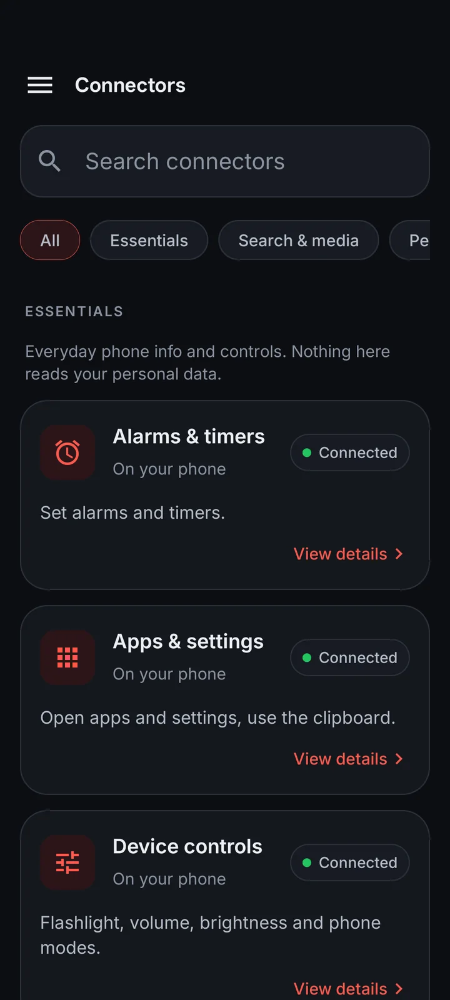
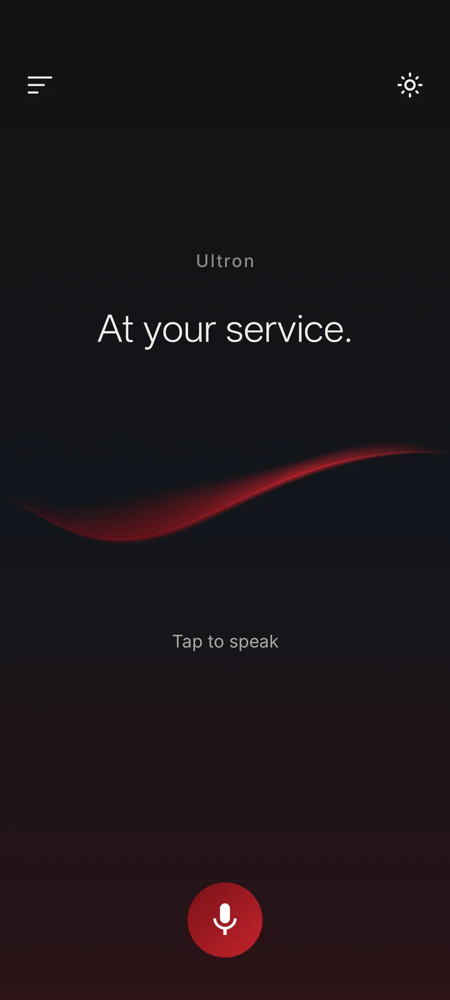
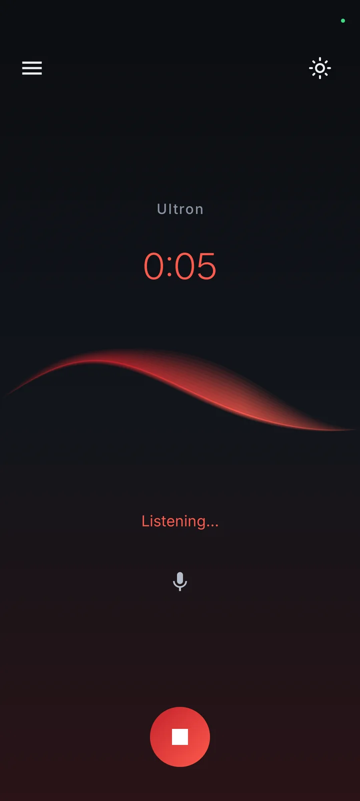
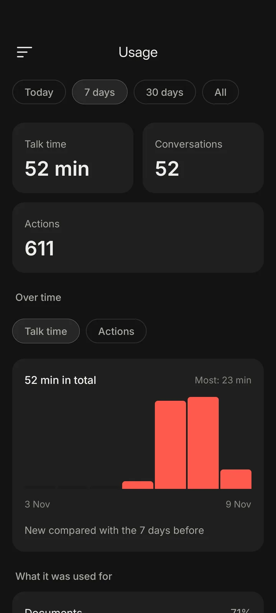
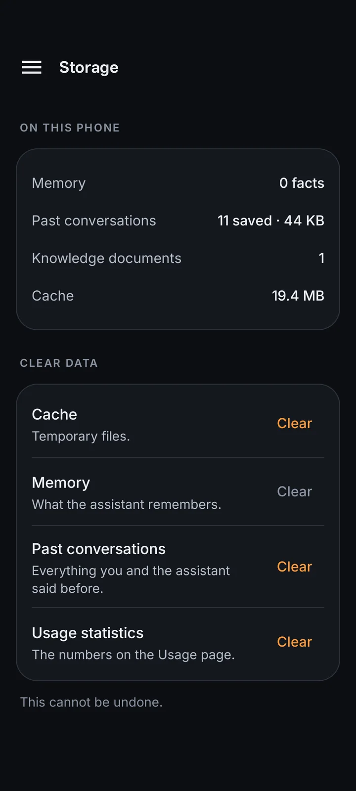
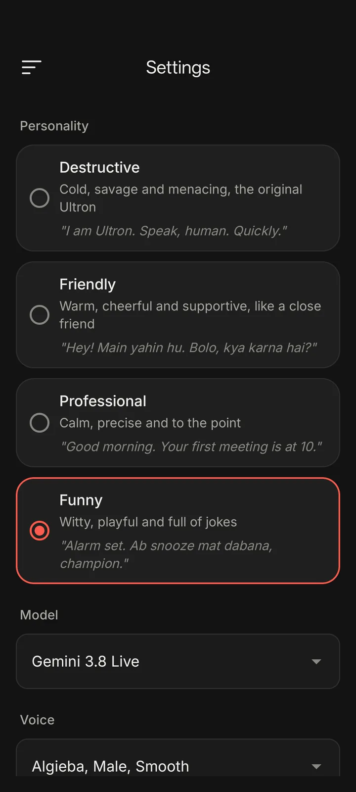
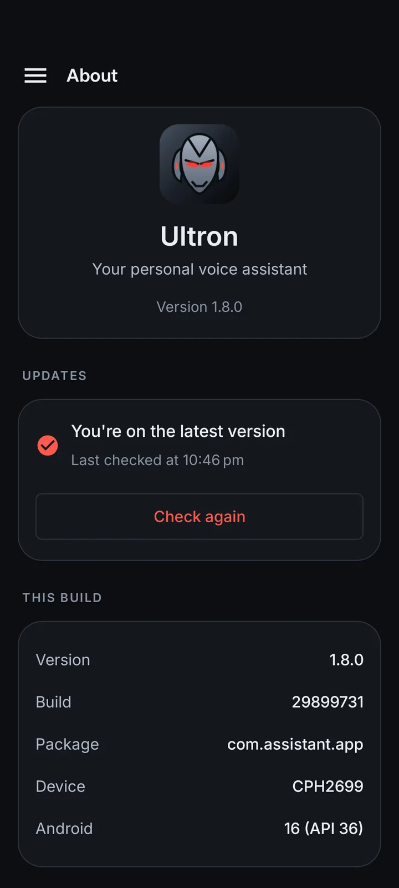
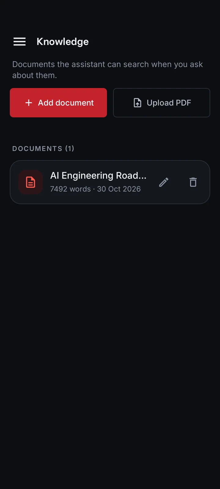

Your phone, hands-free.
Flashlight, volume, brightness, alarms, apps, settings, calls and messages. Say it once.
Voice · Phone control
Version 1.8 · For Android 8.0+
Ultron is a voice assistant for Android. It holds a live conversation, operates your phone, searches the web, reads your documents and remembers what matters.



Built on
Less tapping
The setting you need, the app you want, the answer buried in your notes. Just ask.
One assistant
Everything you say is routed to the right place: your phone, the web, your documents or your memory. All from one conversation.
Interruptible conversation, Gemini Live
19 tools sets, enable what you need
Your PDFs and notes, hybrid search
Facts and every past conversation
Instruction sets you can write
Read the screen, tap, type, navigate
Capabilities
Flashlight, volume, brightness, alarms, apps, settings, calls and messages. Say it once.
Voice · Phone controlBarge-in is on by default. Ultron stops, listens and answers the new thought.
Alarms, timers, reminders that ring until dismissed, calendar events and phone modes.
With Accessibility enabled, Ultron reads what is on screen, taps, types, scrolls and waits for text, in any app.
Phone controlWeb search with sources, a reader for any link, weather now and for days ahead, YouTube search and downloads.
Search and mediaSaves lasting facts and keeps every past conversation, so you can ask what you said last week.
MemoryAdd text or PDFs. Hybrid vector and keyword search finds the right paragraph.
Knowledge baseWrite your own instruction sets, such as a WhatsApp messaging flow, and Ultron follows them.
SkillsTalk time, conversations and actions by day, with 7 day, 30 day and all-time charts. Stored on the phone.
UsageConnectors
A fresh install switches on a safe set. Everything else is off until you connect it. Tap Connect and Android asks for the permission it needs.
Time, battery, storage and memory, network, Wi-Fi, Bluetooth, step count and light level.
On by defaultFlashlight, brightness, volume, ringer, vibrate, do not disturb, media keys, screen timeout, auto-rotate.
On by defaultSet an alarm or timer, and see the phone's next alarm.
On by defaultSet for a time or date up to a year ahead, repeat daily or weekly. Rings with sound and vibration until dismissed.
Open any app, the camera and settings, use the clipboard, show a notification.
On by defaultLook up what you said yesterday, last week or last month, and answer from it.
Search with sources through Ultron's server, with a direct DuckDuckGo fallback on the phone.
On by defaultRead any web page or link and summarize it by voice.
On by defaultWeather now and for the next few days.
On by defaultSearch videos and playlists, get details, transcripts and channel uploads. No API key.
List qualities and save video or audio to Downloads/Ultron. Media never passes through a server.
Upcoming events, conflict checks and new events.
Find a contact, see birthdays, open a form to save a new one.
Where you are now, and directions.
Find and open photos, videos and files.
Your most-used apps and how long you spend in each.
Read and reply to notifications. Optionally read new ones aloud during a session.
Back, home, recents, notification shade, quick settings, scroll, lock screen and screenshots.
On by defaultRead what is on screen, tap, type and wait for text. Calls and texts go through your own phone apps.
On by defaultPhone control uses Android's Accessibility service and carries a warning in the app. It stays off until you grant it yourself.
Voice
Tap the mic and you are in a live conversation over the Gemini Live API. Speak naturally and hear the reply as it is generated.
Languages
13 spoken languages, with the assistant answering in the same one.
Knowledge and memory
Add typed text or PDFs, then ask about them by voice.
Two layers: lasting facts and the full history of what you have said.
Skills and automation
A skill is a short instruction set. Ultron always sees its description and opens the full steps only when needed, which keeps conversations fast.
The app
Captured live from the phone. Dark and light themes, contrast-checked.





Under the hood
Memory, documents, history and usage stay on the phone. API keys are AES-256 encrypted in Android's keystore.
Screen control and notification access are off until you grant the Android permission yourself.
Small stateless AWS Lambda servers. Nothing stored; tokens travel per request.
Web pages, messages and tool output are treated as data, never as instructions.
One-tap over-the-air updates, checked by checksum and Android's signature.
FAQ
A personal voice assistant for Android, written in Kotlin with Jetpack Compose. It combines live conversation with phone control, connectors, memory, a document knowledge base and skills.
No. Voice uses Gemini in the cloud, as do documents and web tools. Memory, knowledge, history and usage are stored on the phone.
With Accessibility enabled it can read and tap supported screens. Results depend on the app and on Android's restrictions.
Your voice goes to Gemini to produce replies, documents are sent to be embedded, and tool calls go to the connectors you enable. The app also includes Firebase Crashlytics and Analytics.
Yes. Ultron uses your own Gemini API key for voice, documents and search. Add it in Developer settings.
This site has no APK or store download. Contact the creator for access.